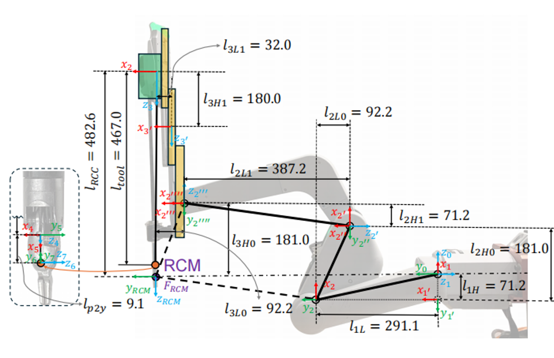
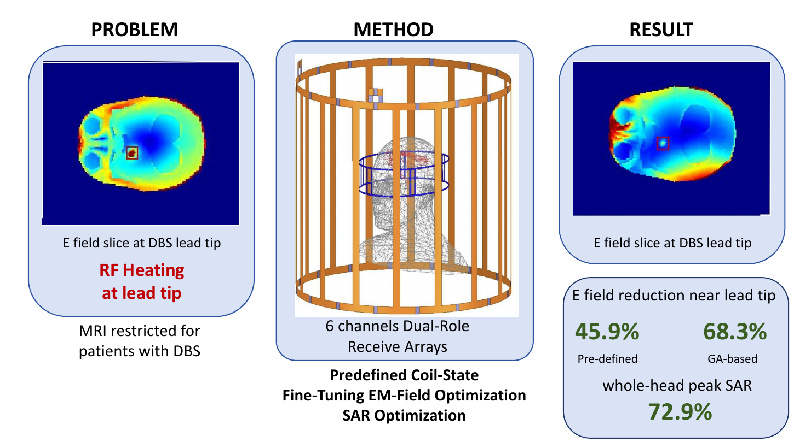
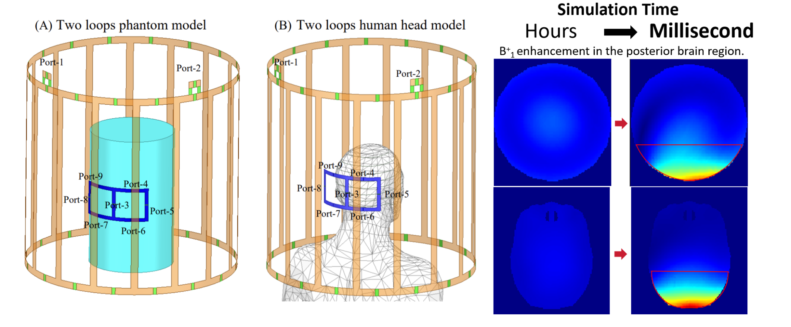

Zhonghao (Jonathan) Zhang
B.S. Candidate in Electrical & Computer Engineering and Mathematics (Minor in Computer Science) · Vanderbilt University · Class of 2027
Hi! I’m a senior undergraduate student at Vanderbilt University. I work on robotics research with Prof. Jie Ying Wu and Prof. Peter Kazanzides. Previously, I worked on MRI with Prof. Xinqiang Yan.
Research interests: Robot Perception · Robot Learning · Robot Dynamics · Contact-Rich Manipulation
Publications
Object-Centered Reconstruction for Vision-Based 3D Force Estimation
In submission
Transferable Tool–Tissue Contact Detection from Stereo Depth in Robot-Assisted Surgery
SPIE Medical Imaging
Dynamics Estimation for the da Vinci Research Kit: A Review of Model-Based and Learning-Based Approaches
Machines, vol. 14, no. 8, p. 879, 2026
Reducing RF-Induced Heating of DBS in 3 T MRI Using Dual-Role Receive Arrays as Wireless Resonators: A Simulation Study
IEEE Access, vol. 14, pp. 112236–112247, 2026
Fast Electromagnetic and RF Circuit Co-Simulation for Passive Resonator Field Calculation and Optimization in MRI
Magnetic Resonance Imaging, vol. 129, p. 110644, 2026
Friction Compensation for Improved Sensorless Force Estimation in the dVRK-Si
In submission
Towards Dynamic Model Identification and Gravity Compensation for the dVRK-Si Patient Side Manipulator
IEEE Transactions on Medical Robotics and Bionics, 2026 · Accepted
Workshop papers and abstracts
Stereo Vision-Based Force Estimation and 3D Reconstruction Toward Autonomous Colorectal Anastomosis: A Preliminary Study
2nd International Workshop on the Evolving Landscape of Surgical Robotics (ELSR), IROS 2026 · Workshop paper
Electromagnetic Field Optimization for Safe MRI of Patients with Deep Brain Stimulation Using Wireless Coils
ISMRM & ISMRT Annual Meeting and Exhibition, Cape Town, South Africa, 2026 · Abstract
Show more publicationsShow fewer publications
Monocular Depth Estimation Use and Accuracy in Simulated Endoscopic Environments
SPIE Medical Imaging
Research projects
Vision-Based 3D Force Estimation
ICRA 2027 (in submission) · IROS 2026 ELSR Workshop · 2026/5–2026/9
Estimating instrument–tissue forces from stereo endoscopic video with object-centered geometry and deformable tracking.
Transferable Tool–Tissue Contact Detection from Stereo Depth in Robot-Assisted Surgery
SPIE Medical Imaging · 2026/5–2026/8
Detecting surgical contact from stereo depth, local tool–tissue geometry, and temporal state modeling.

dVRK-Si Dynamics and Sensorless Force Estimation
Machines · IEEE T-MRB · 2026/1–Present
Identifying robot dynamics and separating internal actuator torque from external interaction.

Reducing RF-Induced Heating of DBS in 3 T MRI
IEEE Access, 2026 · ISMRM 2026 · 2025/10–2026/2
Using a tunable six-channel dual-role receive array to reshape RF fields and reduce DBS lead heating in 3 T MRI.

Fast EM–RF Co-Simulation for MRI
Magnetic Resonance Imaging, 2026 · 2024/12–2025/8
Fast and accurate field calculation and optimization for passive resonators in MRI.